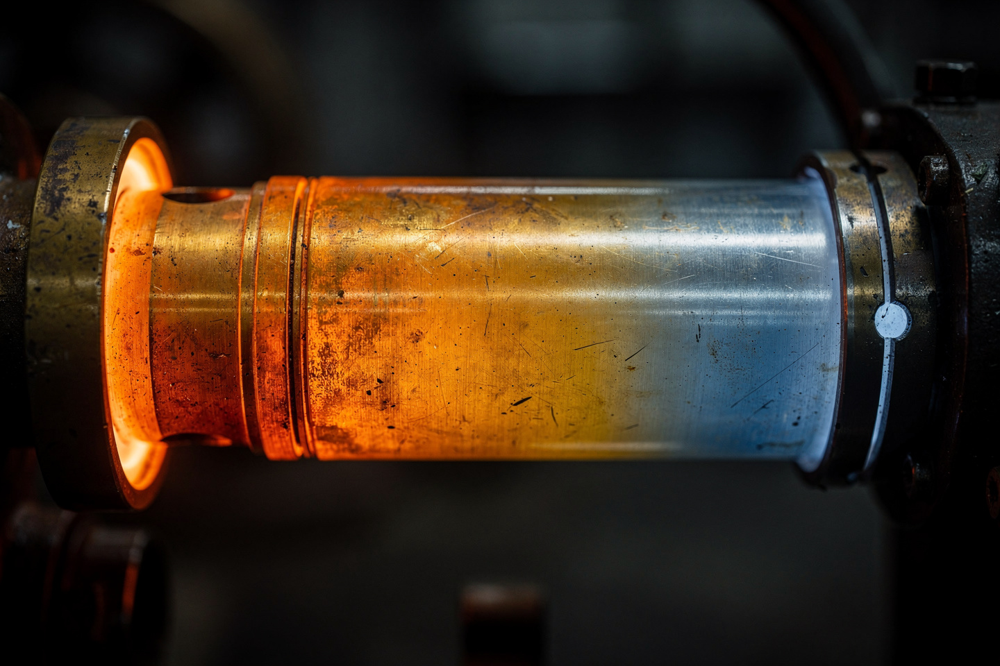
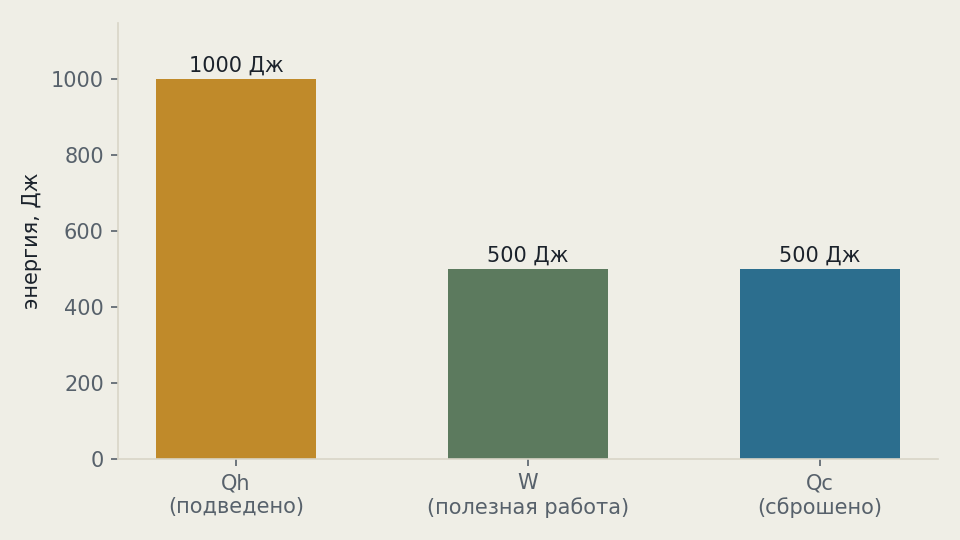
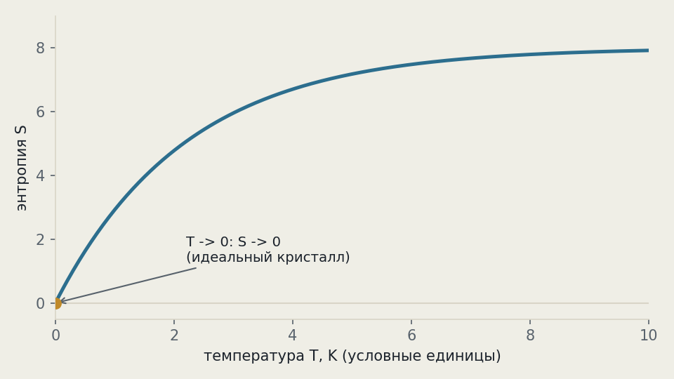

Рабочая заметка · термодинамика · часть III
Четыре начала термодинамики: энергия, беспорядок и абсолютный ноль
Одна из немногих областей физики, где законы формулировались не «сверху вниз» от красивой теории, а «снизу вверх» — из попыток понять, почему паровая машина никогда не бывает идеальной.
Термодинамика — редкий раздел физики с законом «номер ноль»: базовый принцип, объясняющий саму температуру, был осознан позже первого и второго начал и получил номер задним числом. Всего начал четыре: нулевое определяет температуру, первое — сохранение энергии для тепла и работы, второе — почему процессы необратимы и энтропия растёт, третье — почему абсолютный ноль недостижим. Вместе они управляют всем — от чашки кофе до эволюции звёзд.

Четыре начала в двух словах
| Начало | Коротко | Что запрещает |
|---|---|---|
| 0 | тепловое равновесие транзитивно | неоднозначность температуры |
| I | ΔU = Q − W | вечный двигатель первого рода (энергия из ничего) |
| II | ΔS ≥ 0 в изолированной системе | вечный двигатель второго рода (100% КПД) |
| III | S → 0 при T → 0 | достижение абсолютного нуля за конечное число шагов |
Шутливая формулировка всех трёх пронумерованных начал разом, известная физикам: «Ты не можешь выиграть (I — нельзя получить больше энергии, чем вложил), ты даже не можешь остаться при своих (II — часть энергии всегда рассеивается) и ты не можешь выйти из игры (III — нельзя остыть до абсолютного нуля и остановить всякое движение)».
Нулевое начало: что такое температура
Формулировка. Если система A находится в тепловом равновесии с системой C, и система B тоже находится в тепловом равновесии с C, то A и B находятся в тепловом равновесии друг с другом:
Звучит почти как «математическая банальность» (транзитивность равенства), но физического содержания здесь много: закон утверждает, что у теплового равновесия вообще есть единственный числовой параметр (температура), а не что-то более сложное. Именно на этом принципе работает любой термометр: он сам становится «системой C» — приходит в равновесие с телом, которое измеряет, и мы просто читаем его собственную температуру.
Первое и второе начала были сформулированы раньше (1850-е), а нулевое — только в 1931 году Ральфом Фаулером. К тому моменту нумерация 1-2-3 уже устоялась в учебниках, и чтобы не переписывать всё, самый фундаментальный (логически предшествующий остальным) принцип получил номер «0» — редкий случай, когда порядок открытия и порядок логической важности пошли в разные стороны.
Первое начало: энергетическая бухгалтерия
Формулировка. Изменение внутренней энергии системы равно теплоте, переданной ей, минус работе, совершённой системой над окружением:
Численный пример: газу в цилиндре подвели Q = 500 Дж тепла. Расширяясь, газ толкает поршень и совершает работу W = 200 Дж против внешнего давления. Насколько изменилась внутренняя энергия газа?
Представьте банковский счёт: Q = 500 Дж — доход, W = 200 Дж — расход, ΔU = 300 Дж — то, что осталось на счету (запаслось во внутренней энергии газа, то есть его молекулы в среднем стали двигаться быстрее — газ нагрелся).
«Тепло — это то же самое, что температура» — нет: теплота Q — это процесс передачи энергии (как «доход» на счету), а температура — параметр состояния системы (как «баланс счёта» в других единицах). Можно передать телу много тепла и почти не поднять температуру (например, при плавлении льда — вся энергия уходит на разрушение кристаллической решётки, не на разогрев).
Второе начало: беспорядок только растёт
Формулировка. В изолированной системе энтропия не убывает:
Энтропия S — мера того, сколькими способами частицы системы могут быть расставлены на микроуровне при том же макроскопическом виде системы (формула Больцмана: S = kB ln Ω, где Ω — число микросостояний). Разбросанные по комнате вещи можно расположить неупорядоченным образом гораздо большим числом способов, чем аккуратно сложенными — поэтому «само по себе» убирается редко, а разбрасывается легко.
| Формулировка | Автор | Суть |
|---|---|---|
| Клаузиуса | Рудольф Клаузиус | тепло не течёт само от холодного к горячему |
| Кельвина | Уильям Томсон | нельзя построить машину, единственный результат которой — 100% превращение тепла в работу |
Мысленный эксперимент Джеймса Максвелла (1867): крошечное существо у перегородки между двумя объёмами газа пропускает быстрые молекулы в одну сторону, медленные — в другую, разделяя газ на горячую и холодную половины без затрат энергии — казалось бы, нарушая второй закон. Разгадка (Лео Силард, 1929): сам процесс «измерения» скорости молекулы демоном увеличивает энтропию демона (или его памяти) не меньше, чем уменьшается энтропия газа — закон спасён, но ценой рождения целой области физики информации.
Третье начало: абсолютный ноль недостижим
Формулировка. При стремлении температуры к абсолютному нулю энтропия идеального кристалла стремится к нулю:
Следствие этого начала — практическое, а не только формальное: абсолютный ноль (−273.15 °C, 0 К) нельзя достичь за конечное число шагов охлаждения, только асимптотически приблизиться. Рекорд лаборатории — около 100 пикокельвинов (10−10 К) в конденсате Бозе-Эйнштейна — всё ещё не ноль, хоть и в десятки миллиардов раз холоднее межзвёздного пространства.
Реальные твёрдые тела не всегда доходят до S = 0 даже теоретически: стёкла и другие неупорядоченные (аморфные) вещества «замерзают» со случайной структурой и сохраняют остаточную энтропию при сколь угодно низкой температуре — интересное исключение, которое до сих пор изучается.
Сквозной пример: тепловой двигатель
Соберём первое и второе начала на одном примере — идеализированном тепловом двигателе (цикл Карно), работающем между горячим резервуаром Th = 600 К и холодным Tc = 300 К.
Второй закон задаёт максимально возможный КПД такого двигателя (выше него не прыгнуть, что бы вы ни придумали):
Пусть от горячего резервуара подведено Qh = 1000 Дж тепла. Первый закон (энергия никуда не девается) говорит, что вся эта энергия распределится между полезной работой W и теплом Qc, сброшенным в холодный резервуар:

Ни один реальный двигатель между этими же двумя температурами не превзойдёт эти 500 Дж — цикл Карно даёт теоретический потолок КПД, а трение и необратимость реальных процессов лишь снижают результат ниже этого потолка, никогда не поднимая выше.
Куда это ведёт: энтропия и стрела времени
Второе начало — едва ли не единственный закон фундаментальной физики, различающий прошлое и будущее. Уравнения Ньютона, Максвелла и даже Шрёдингера полностью симметричны во времени: если снять на видео столкновение бильярдных шаров и прокрутить назад, законы механики не найдут нарушения. Но видео с разбивающейся чашкой, прокрученное назад (осколки сами собираются в целую чашку), выглядит абсурдно — и единственный закон физики, который это «замечает», — второй.

Энтропия оказалась на удивление универсальным понятием: Людвиг Больцман в 1870-х связал её с числом микросостояний, а спустя столетие Джейкоб Бекенштейн и Стивен Хокинг обнаружили, что у чёрных дыр тоже есть энтропия — пропорциональная не объёму, а площади горизонта событий. Этот неожиданный факт стал одной из главных подсказок к голографическому принципу в современной теоретической физике — идее, что вся информация о трёхмерной области может быть закодирована на её двумерной границе.
На сайте это отдельные законы, если хочется пройти глубже:
Нулевое начало · Первое начало · Второе начало · Третье начало
Эксперимент дома
Возьмите медицинский шприц без иглы, закройте выходное отверстие пальцем и резко сожмите поршень. Приложите палец другой руки к цилиндру шприца.
Что заметить шприц заметно нагреется. Вы совершили работу W над газом (сжали его), а тепло Q никуда не уходило (процесс быстрый, теплообмен с воздухом не успевает) — по первому закону вся эта работа пошла на рост внутренней энергии ΔU, то есть газ нагрелся. Именно так работает воспламенение топлива в дизельном двигателе — только там сжатие ещё сильнее.
Положите пару кубиков льда в стакан с тёплой водой и следите за температурой (на ощупь или термометром) в течение нескольких минут.
Что заметить тепло переходит от тёплой воды ко льду (второе начало — только в эту сторону, не наоборот), пока обе части не придут к общей температуре — это и есть тепловое равновесие из нулевого начала. Заметьте также: пока лёд ещё не растаял полностью, температура смеси почти не меняется — энергия уходит на плавление (разрушение кристаллической решётки льда), а не на разогрев, ровно как обсуждалось в §3 про разницу тепла и температуры.
Задачи для проверки
Сначала подумайте сами, затем откройте решение. Решение везде идёт по схеме: Дано → Закон → Решение → Ответ.
1. Газу в закрытом жёстком сосуде (объём не меняется, работа не совершается) подвели 400 Дж тепла. Насколько изменилась его внутренняя энергия?
Дано Q = 400 Дж, W = 0 (объём постоянен — поршень никуда не двигается).
Закон первое начало (§3): ΔU = Q − W.
Решение ΔU = 400 − 0 = 400 Дж.
Ответ +400 Дж — при постоянном объёме всё подведённое тепло идёт во внутреннюю энергию.
2. Идеальный тепловой двигатель работает между температурами 800 К и 400 К. Какой у него максимальный КПД?
Дано Th = 800 К, Tc = 400 К.
Закон предел Карно (§6, второе начало): ηmax = 1 − Tc/Th.
Решение ηmax = 1 − 400/800 = 0.5.
Ответ 50% — и это ПРЕДЕЛ, реальный двигатель между теми же температурами будет хуже.
3. Двигатель с КПД 40% получает от горячего резервуара 2000 Дж тепла за цикл. Сколько тепла сбрасывается в холодный резервуар?
Дано η = 0.4, Qh = 2000 Дж.
Закон первое начало: Qh = W + Qc, где W = ηQh.
Решение W = 0.4·2000 = 800 Дж; Qc = 2000 − 800 = 1200 Дж.
Ответ 1200 Дж — больше половины подведённого тепла уходит впустую даже у не самого плохого двигателя.
4. Газ расширяется и совершает работу 150 Дж, а его внутренняя энергия при этом падает на 50 Дж. Сколько тепла было передано газу (или отведено от него)?
Дано W = 150 Дж, ΔU = −50 Дж.
Закон первое начало: Q = ΔU + W.
Решение Q = −50 + 150 = 100 Дж.
Ответ +100 Дж подведено — газу передали тепло, но его не хватило покрыть всю совершённую работу, поэтому часть недостающей энергии газ «доплатил» из своего внутреннего запаса (он остыл).
5. Термос с чаем (60 °C) стоит в комнате при 20 °C. Опишите, в какую сторону и почему пойдёт теплообмен, ссылаясь на конкретное начало термодинамики.
Закон второе начало в формулировке Клаузиуса (§4).
Решение тепло самопроизвольно переходит только от более горячего тела к более холодному — значит, чай будет остывать, отдавая тепло воздуху комнаты, пока не установится общая температура (нулевое начало, §2) — заведомо ниже 60 °C и выше 20 °C.
Ответ тепло идёт от чая к воздуху комнаты, обратный процесс (воздух сам нагревает чай выше комнатной температуры) вторым началом запрещён.
Опечатка, неверная формула, число не сходится, коряво объяснено — напишите нам: feedback@bridge42worlds.org. Каждое сообщение реально читается, разбирается и по нему вносится правка — это не «в стол».